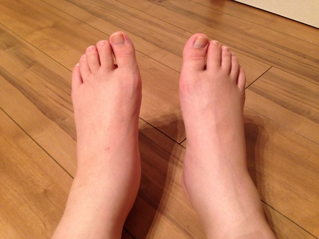

むくみ
むくみとは
むくみとは、皮膚の下にある皮下組織に水がたまった状態のことを言い、医学的には「浮腫」と呼ばれています。
血液中の水分が血管の外ににじみ出てしまい、血管の中に戻れなくなった状態です。
足がむくむ、顔が腫れるなど、むくみは日常的によく見られる症状の一つですが、繰り返すむくみや腫れの中には大きな病気が隠れていることもあります。

原因
病気や不調・加齢など身体全体に原因があるむくみ
- 心臓：心不全、肺高血圧症など
- 腎臓：腎炎、腎不全、ネフローゼ症候群など
- 肝臓：肝硬変など
- ホルモンの異常：甲状腺機能低下症など
- 栄養状態の低下：ネフローゼ症候群や高齢者でよく見られる、血液中のたんぱく質が少なくなり水を血管内に保つことができない状態
- アレルギー：食べ物や薬などのアレルギーで、突然出てくる激しい浮腫が見られることがある
- 薬の影響
- 妊娠
- 加齢（廃用性浮腫）：足の筋肉が衰え、ポンプ機能が働かないことが主な原因
- 特発性浮腫：原因不明の浮腫、閉経前の中年女性に多いとされる
むくんでいる局所に原因があるむくみ
- 皮膚の病気：丹毒や蜂窩織炎などの感染症のほか、虫刺されやしもやけなどが原因となることがある
- 静脈性浮腫：深部静脈血栓症、下肢静脈瘤など
- リンパ浮腫：なんらかの原因（がんや手術・放射線治療の影響など）でリンパの流れが悪くなる病気
放っておいてはいけないむくみの特徴
以下に当てはまるむくみの場合、一度病院での診察が必要です。
特に①、②に当てはまる場合は緊急を要する病気の可能性があるため、急いで病院を受診しましょう。
①突然、急に激しくむくんできた
足の静脈に血の塊が詰まる深部静脈血栓症（エコノミークラス症候群）や重症のアレルギー反応であるアナフィラキシーなどの場合、突然むくみが出てくることがあります。
②むくみ以外の症状がある
むくみ以外に、呼吸が苦しい・息が切れる、お腹が張る・腫れる、尿が出ない、目や唇の急激な腫れ、意識消失などの症状がある場合には、心不全や腎不全、肝硬変や肺塞栓症緊急の対応を必要とする身体の病気が隠れている可能性があります。
③一晩たっても症状が良くならない、または悪化している
塩分の摂りすぎや立ちっぱなしなど、一時的に起こるむくみの場合は、夕方から夜にかけてむくみがひどくなり、一晩寝て朝起きるとむくみが軽くなっていることがほとんどです。
一晩ゆっくり寝ても全く良くならないどころか、前日よりもさらにむくみがひどくなっているような場合は、身体の病気が隠れていないか一度診察を受けた方が良いでしょう。
日常生活での注意点
立ちっぱなし、座りっぱなしなど、長時間同じ姿勢を取らない：足を動かすと足の筋肉がポンプの働きをするため、むくみにくくなります。
塩分やアルコールを摂りすぎない：塩分は水を溜める働きがあります。アルコールは飲み過ぎると脱水となり、水分の摂りすぎにつながります。
夜寝るときに足元を10cmほど高くして寝ると、足にたまった余分な水が心臓まで戻りやすくなる
参考文献
https://www.tyojyu.or.jp/net/byouki/rounensei/fushu.html
https://clinicalsup.jp/jpoc/ContentPage.aspx?DiseaseID=1070
https://www.jrs.or.jp/citizen/faq/q25.html
https://www.masuda-med.or.jp/info/health_information/health_information-678/
https://www.ncgg.go.jp/hospital/shinryo/senmon/haremukumikaisetu.html
https://www.harefukutsuu-hae.jp/knowledge/
https://www.kracie.co.jp/ph/coccoapo/magazine/11.html